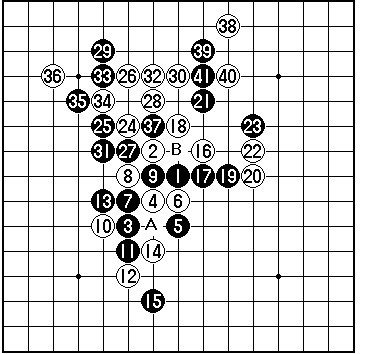
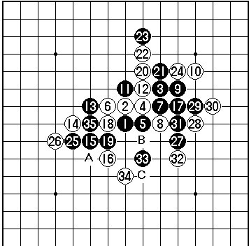
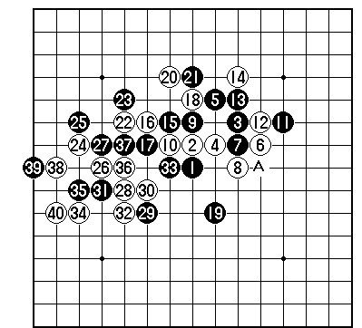
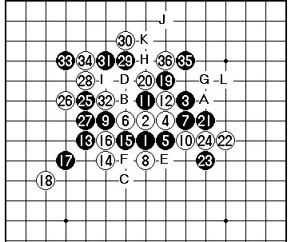
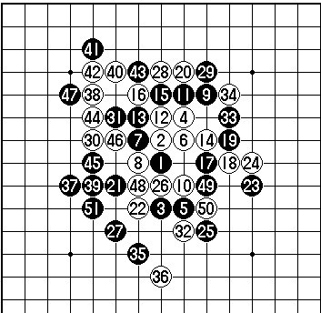
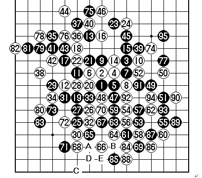

2013年全国团体赛自评
#1 2013年全国团体赛自评 作者：冰雪笑醉 发表时间：2013-5-2 23:28:49
能代表炫飞社团打本次比赛，对于我来说真实很荣幸，在这之前就知道炫飞人才济济，实在感到压力很大，最终第二的结果也不知道合格不，哈哈！
以下将自己实战写出，请大家欣赏，能有所帮助就好！
比赛主旋律
经验多一点的我，知道自己的棋谱知识量实在欠缺，所以力求尽快进入中盘，哪怕吃点亏，利用对棋局的驾驭能力控制住局面。
第一盘

黑棋流星开局，不是很熟悉，白棋跳防，变成疏星局的类似棋形，黑 5 弱， 走 A 或 9 点强，局面会很主动，以下至白 14 的招法都是在完成白棋防守的意图，黑 15 无奈的放弃先手，白棋控制局面，白 16 做局部连接， 17 的防守还是很强的，白 22 意图是布子粒在外位，黑棋 23 强硬，但先手还掌控在白棋手中，白棋继续 24 做棋， 25 败着，应走 B 点。实战白棋 26 必胜棋形了，取胜就是时间问题，最后抓黑三三禁手胜。
第二盘

黑方 殷立成 白方 王天鹤 交换否 5A=6 结果黑胜
黑棋疏星开局，预计以主动进攻打开局面，实战至黑 15 基本就是预想图， 16 防守很强，黑 17 控制局面的下法， 18 问题手，黑棋增加了横线连接，应该还是单 20 就很好，由于 19 的出现，黑 24 的防守出现问题，应该加强右下防守力量，走 31 点好，虽然局面被黑棋控制，但局面分割，黑棋取胜困难，黑 25 活三扩张连接线路，产生 A 、 35 的不同连接，黑 27 做棋，白防守实在困难，黑 29 的继续做棋，白 30 防守 31 强，以下黑棋简单追胜，黑 35 后有 B 、 C 杀。
第三盘

芦海比赛遇到的真强手，开局疏星局，持白好下点，为了寻找机会，没交换，黑 5 意外，对手似乎有点想法，实战到 16 手都是合理交换的变化， 17 感觉弱，走 37 好！白 18 防守干净，有此一手白棋不败了，由于 17 的松，黑 19 丢失先手了。白 20 展开进攻，实战感觉比走 21 展开好。 22 攻守兼备的好点， 23 强防。 24 失着！由于想得简单，阻挡线路寻找后续做棋点，但丢了先手，黑棋 25 应 A 位展开进攻，白棋困难，实际上白 24 应先 26 。但所幸对手惯性思维顺手 25 防守，白 26 后重新控制先手， 27 唯一，白 28 活三后做棋 30 ，是攻守兼备的思路，渐渐发展成对白有力的局面，黑 31 防守失误，挡在 37 好点。白 32 后白 34 必胜了。
第四盘

黑方祁观又一强手，本想白 8 走 10 位，黑棋活三走大定式，进行全盘控制的，不想白 8 变招，以下至黑 11 看白棋选则，实战白 12 强防，黑棋 13 好棋，白 14 走 B 也不行，如黑走 14 ，白 C ，危险，实战黑 15 冲四，黑 17 活三后，据说别人分析黑 19 走 20 是必胜的，实战黑棋没算到，黑 21 活三希望白棋防上面，但白 22 强硬，黑 23 不能省略，不然白棋存在白 E 黑 F 白 23 的做杀，黑棋难受，实战 24 也很强硬，硬要抢夺下方势力，走 H 就很好了，这里白 24 不能强攻，黑 G 点有杀，实战黑 25 转身，期望寻找机会，白棋 26 、 28 坚固防守，黑 29 做连接，白防守 H 依旧很好，实战白棋 32 的防守强硬，有抢夺先手的意思，黑 33 时，顾及到棋盘左边的味道，白没走 H 点，这样黑 35 继续做棋。白 36 防守，因为黑 I 点的先手，有 J ， K 点的利用，所以在思考， L 点的攻和转身的问题，不想超时了，郁闷！挺自信的一盘棋。
第五盘

黑 朱建锋 白 殷立成 瑞星开局 交换 否 5A=10 结果黑胜
实在无言以对，实战至 24 基本定式，比较古老，黑有力，白 18 走 33 好点，实战白 26 对 25 失去判断，下意识觉得 32 点很可怕，想控制，但 27 防守绝对，其实对上面没棋是有意识的， 27 的下法也是知道的，只是希望能借用一点力量，干扰一下黑左右的棋，但实际结果很差，白 32 无奈防守，黑 33 老道，控制住白棋能搅局的唯一机会，黑 35 后黑必胜无疑， 38 就是期待对手进攻途中的错误，黑没有给白机会， 51 以下冲四胜！
这盘棋很糟糕，细细分析，想来有点急躁，由于上午输棋，小猪又是强敌，确实很想快速控制对手！心情有些控制不住的冲动，幸好冬瓜、云飞获胜！
第六盘

黑方 殷立成 白方 高聪 疏星开局 交换否 5A =6 结果和棋
如预计的作战方针，打算强攻，实战进行到 16 正常， 17 扩张连接， 19 是平衡的下法，是控制全局的下法，白 20 委屈但有力度， 21 本意是消除潜在危险，但 22 依旧缠着， 23 的交换就是为了抢 25 ，但 24 弱了，在 40 分割黑棋强，黑总算 25 抢到下面的好点， 26 弱了，走 29 黑棋难受，实战被黑占到 29 ，局面完全被黑掌握，白 30 防守，黑棋预想在上面行棋，所以 31 活三，逼白棋 34 防守后，黑 35 在上方展开进攻，初感 35 ， 41 都好的点，但不能都占，白 36 虽说不是最强防，但能先冲 37 点去干扰了 41 点的线路，所以 37 控制住， 38 防守后黑没算到杀，所以 39 转身，利用潜在线路控制全盘， 40 消除内在危险， 41 寻找机会，也是在定定型，经过交换 45 如愿的逼白棋防守 46 （实际逼不到，是实战手），占得外和里的交换便宜。 49 转身继续进攻， 53 不走 62 点顾忌白抢 53 点后对棋盘左下有压力， 55 的进攻，白 56 强，面对 57 的挑战，白棋走的很沉稳，交换到 62 时黑棋进攻结束了，接下来黑棋通过交换 70 手时控制住白棋下方可能的危险，白棋随后尝试进攻，黑棋稳妥的防守就是，最后和棋，唯一的机会是黑棋 87 走 88 想活三取胜，等到机会的白棋只要白 A 黑 B 白 C 黑 D 抓黑棋 E 点的四四禁手，但 86 提醒了黑棋，黑实战避开陷阱，其实之前我没看见那个陷阱。
第七盘 对手弃权胜（就没来比赛）
 比赛棋谱图.rar
比赛棋谱图.rar
［ 小红眼镜 于 2013-5-2 23:33:32 时花20金币送鲜花一朵］
［ 小红眼镜 于 2013-5-2 23:33:32 时花20金币送鲜花一朵］
［ 小红眼镜 于 2013-5-2 23:33:32 时花20金币送鲜花一朵］
［ 小红眼镜 于 2013-5-2 23:33:32 时花20金币送鲜花一朵］
［ 小红眼镜 于 2013-5-2 23:33:32 时花20金币送鲜花一朵］
［ 暮雨迟 于 2013-5-3 6:03:39 时花20金币送鲜花一朵］
［ 山城刀客 于 2013-5-3 10:31:43 时花20金币送鲜花一朵］
［ 山城刀客 于 2013-5-3 10:31:43 时花20金币送鲜花一朵］
［ 山城刀客 于 2013-5-3 10:31:43 时花20金币送鲜花一朵］
［ 山城刀客 于 2013-5-3 10:31:43 时花20金币送鲜花一朵］
［ 山城刀客 于 2013-5-3 10:31:43 时花20金币送鲜花一朵］
［ 簡單 于 2013-5-5 16:21:54 时奖励此帖[金币加 100 威望加1］
#2 Re:2013年全国团体赛自评 作者：屏蔽 发表时间：2013-5-3 6:48:43
第五盘图好神奇#3 Re:2013年全国团体赛自评 作者：冰雪笑醉 发表时间：2013-5-4 12:03:49
 打的都挺好的呀。
打的都挺好的呀。
坐等花花威望，代收啊，送花的人呢
［ 炫飞花样 于 2013-5-4 22:14:59 时花20金币送鲜花一朵］